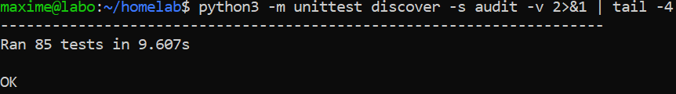
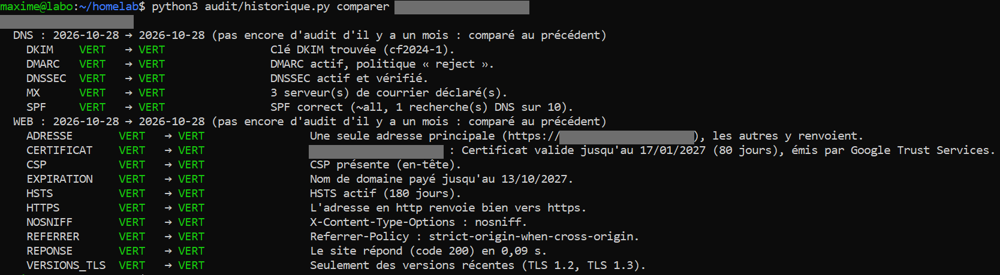
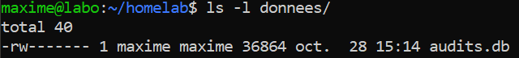
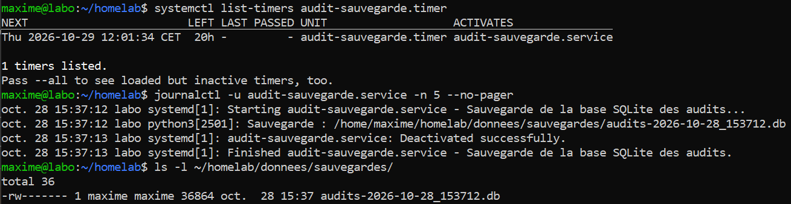
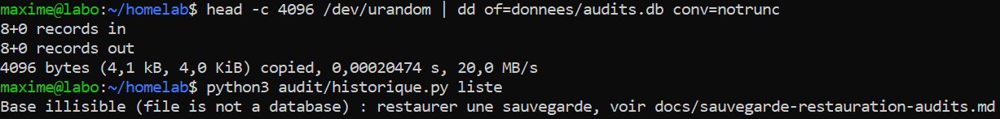
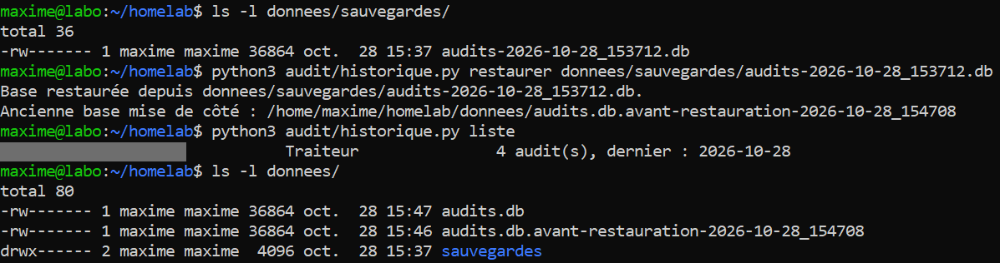

01Objectif
Garder les résultats des audits des étapes 4 (DNS et courrier) et 5 (site web) d'un mois sur l'autre, pour que le rapport mensuel d'un client puisse dire ce qui s'est amélioré ou dégradé. Et protéger ces données comme de vraies données de production :
- une base SQLite sur la tour, avec l'historique de chaque client ;
- une comparaison du dernier audit avec celui du mois précédent ;
- une sauvegarde automatique, vérifiée, avec une copie hors de la tour ;
- une restauration testée en cassant exprès la base, et écrite pas à pas.
02Schéma et technologies
python3 audit/historique.py enregistrer client.fr
│ lance les audits des étapes 4 et 5
▼
┌─────────────────────────────── tour « labo » ────────────────────────────────┐
│ donnees/audits.db (SQLite, droits 600) │
│ domaines ──< audits ──< verifications │
│ │
│ minuteur systemd (tous les jours à midi, rattrapé au démarrage) │
│ └─► historique.py sauvegarder ─► donnees/sauvegardes/audits-DATE.db (×30) │
└──────────────────────────────────────────┬───────────────────────────────────┘
│ scp par SSH (clé), à la main, 1×/mois
▼
PC portable (WSL) : ~/sauvegardes-labo/ (dossier 700)| Rôle | Technologie |
|---|---|
| Base de données | SQLite 3, module sqlite3 de la bibliothèque standard de Python (rien à installer) |
| Planification | Minuteur systemd (.timer + .service), Persistent=true |
| Copie hors de la tour | scp par SSH avec clé, vérifiée par empreinte SHA256 |
| Tests | unittest, base temporaire et faux rapports d'audit (sans internet) |
| Code | audit/historique.py, audit/test_historique.py, systeme/audit-sauvegarde.* (dépôt Git privé) |
| Procédure | docs/sauvegarde-restauration-audits.md |
Structure de la base (trois tables) :
| Table | Contenu |
|---|---|
| domaines | Nom de domaine du client, libellé court (« Traiteur », jamais un nom de personne), date d'ajout |
| audits | Une ligne par audit (DNS ou web) : date, couleur globale, et le JSON complet rendu par le script |
| verifications | Une ligne par vérification (SPF, certificat…) : couleur et message, pour comparer facilement |
Les clés étrangères sont activées : effacer un client efface automatiquement tous ses audits.
Utilisation :
cd ~/homelab
python3 audit/historique.py ajouter client.fr "Traiteur"
python3 audit/historique.py enregistrer --tous # audits DNS + web de tous les clients
python3 audit/historique.py comparer client.fr # ce qui a changé depuis le mois dernier
python3 audit/historique.py sauvegarder # à la main (le minuteur le fait chaque jour)
python3 audit/historique.py restaurer donnees/sauvegardes/audits-….db
python3 -m unittest discover -s audit -v # les tests (étapes 4, 5 et 6)03Données personnelles (RGPD)
Je ne suis pas juriste : ce sont des précautions de bon sens, pas un avis juridique.
Un nom de domaine comme jean-dupont-plombier.fr peut désigner une personne : c'est alors une donnée personnelle. J'ai donc décidé :
- Mes clients seulement dans la base : il y a un contrat, l'historique sert au rapport que je leur fournis. Un prospect n'est jamais enregistré : le script refuse un domaine qui n'a pas été ajouté comme client, et le diagnostic de démarchage reste à l'écran ;
- Le minimum : un libellé court, pas de nom, pas de coordonnées ;
- Accès restreint : base, sauvegardes et copie du portable lisibles par mon seul compte (droits 600 / 700), jamais dans Git, jamais dans un dossier synchronisé (OneDrive…) ;
- Droit à l'effacement : historique.py retirer client.fr efface le client et tout son historique ; la procédure rappelle d'effacer aussi les copies du portable (celles de la tour sont remplacées au bout de 30 jours).
04La comparaison d'un mois sur l'autre
historique.py comparer client.fr met face à face le dernier audit et le plus récent fait au moins 25 jours avant (pas celui de la veille, qui ne montrerait rien). Si le client est trop récent, il compare au précédent et le dit clairement.
Pour chaque vérification, le script affiche : mieux, moins bien, pareil, nouveau ou disparu. Il ne décide aucune couleur : il reprend celles des règles écrites des étapes 4 et 5, et ne fait que les comparer.
05Sauvegarde : pourquoi ces choix
- Un minuteur systemd plutôt qu'une tâche cron : la tour ne tourne pas en permanence. Avec cron, une sauvegarde prévue pendant que la tour est éteinte est simplement perdue. Avec Persistent=true, systemd se souvient de la dernière exécution et rattrape la sauvegarde ratée au démarrage suivant.
- La fonction de sauvegarde de SQLite plutôt qu'un simple cp : un cp pendant une écriture peut donner une copie incohérente ; la fonction de SQLite donne toujours une copie complète.
- Chaque copie est relue (PRAGMA integrity_check) : une copie abîmée est refusée et effacée, au lieu de remplacer silencieusement les bonnes.
- 30 copies gardées sur la tour : de quoi revenir en arrière si un problème n'est vu que tard.
- Une copie hors de la tour : un seul disque dur à plateaux dans la tour ; une sauvegarde sur le même disque ne protège pas d'une panne du disque. Choix de la copie sur le portable plutôt que dans le cloud : 0 €, aucun jeton d'accès à stocker sur la tour, et les données de mes clients ne partent chez personne.
- La restauration ne détruit rien : elle vérifie d'abord la sauvegarde, puis met l'ancienne base de côté (renommée) au lieu de l'effacer.
06Tests réussis
| Test | Résultat attendu | Résultat obtenu | Preuve |
|---|---|---|---|
| 85 tests automatiques (étapes 4, 5 et 6), sur la tour | Ran 85 tests … OK | Conforme | Fig. 1 |
| Mon client traiteur ajouté, deux audits enregistrés, comparaison | 4 audits ; comparaison « au précédent » signalée (même jour) ; tout vert | Conforme | Fig. 2 |
| Droits de la base | -rw------- (moi seul) | Conforme | Fig. 3 |
| Minuteur installé et 1re sauvegarde | Prochaine exécution le lendemain midi ; « Sauvegarde : … » dans le journal ; fichier en -rw------- | Conforme | Fig. 4 |
| Copie sur le portable | Même empreinte SHA256 sur la tour et sur le portable ; dossier en 700 | Conforme | Sortie de commande, sous le tableau |
| Base cassée exprès (4 Ko écrasés au hasard) | Le script refuse proprement : « Base illisible… restaurer une sauvegarde » | Conforme | Fig. 5 |
| Restauration | « Base restaurée » ; le client et ses 4 audits sont revenus ; base cassée gardée de côté | Conforme | Fig. 6 |
| Prospect refusé, effacement d'un client, sauvegarde abîmée refusée, garde des 30 dernières, changement d'heure | Couverts par les tests automatiques | Conforme | — |
Copie sur le portable (empreintes raccourcies) :
$ scp -p 'labo:homelab/donnees/sauvegardes/*.db' ~/sauvegardes-labo/
$ sha256sum ~/sauvegardes-labo/*.db ; ssh labo 'sha256sum homelab/donnees/sauvegardes/*.db'
cb5e1a94…5ac924 /home/maxime/sauvegardes-labo/audits-2026-10-28_153712.db
cb5e1a94…5ac924 homelab/donnees/sauvegardes/audits-2026-10-28_153712.db











07Problèmes rencontrés et solutions
| Problème | Cause | Solution |
|---|---|---|
| Une commande mal tapée créait une base vide | Le script ouvrait (et donc créait) la base avant de vérifier la commande | Les arguments sont vérifiés d'abord ; l'aide s'affiche sans toucher à la base |
| Une base cassée donnait une erreur Python illisible | L'erreur de SQLite (« file is not a database ») n'était pas interceptée | Message clair qui renvoie vers la procédure de restauration |
| Où lancer sudo pour installer le minuteur ? | Claude Code ne permet pas de taper un mot de passe | Commandes sudo tapées dans mon propre terminal SSH, le reste pouvait être fait dans les deux |
| Comparer « au mois dernier » au moment du changement d'heure | Les dates passent de +02:00 à +01:00 fin octobre | Dates lues avec leur fuseau, écart calculé en vrai temps écoulé (test automatique dédié) |
08Ce que j'en retiens
- Une sauvegarde qu'on n'a jamais restaurée n'est pas une sauvegarde : comme pour mon client traiteur (base D1 de Cloudflare), j'ai cassé exprès les données pour prouver que la restauration marche.
- Adapter les outils à la réalité du matériel : une tour qui n'est pas allumée tout le temps demande un minuteur qui rattrape les sauvegardes ratées, pas une tâche cron classique.
- Le RGPD se règle d'abord en ne gardant pas : ne pas enregistrer les prospects m'évite d'avoir à gérer leur conservation et leur effacement.
- Règle 3-2-1 en version homelab : plusieurs copies, sur deux machines ; la troisième, hors de la maison, est une piste pour plus tard (copie chiffrée).